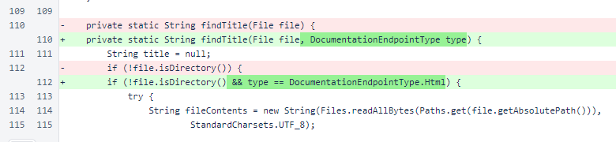

Nyzo version 602 (commit on GitHub) eliminates unnecessary file loading to find titles when initializing the documentation server.
This version only affects the documentation server.
Our current focus of implementation is Micropay for NTTP-5. While implementing this, however, we found an issue that could be corrected with an isolated, easy-to-test change. The correction is being released now to simplify subsequent releases.
In the DocumentationEndpoint constructor, the endpoint type is now determined before the title, and the type is passed to the findTitle() method.

In the DocumentationEndpoint.findTitle() method, the endpoint type is now checked, and only endpoints of DocumentationEndpointType.Html are scanned for titles. This, most importantly, eliminates reading of all image files into memory on initialization. In our tests, this reduces the initialization time of the documentation server to less than 25% of that seen in version 601.
